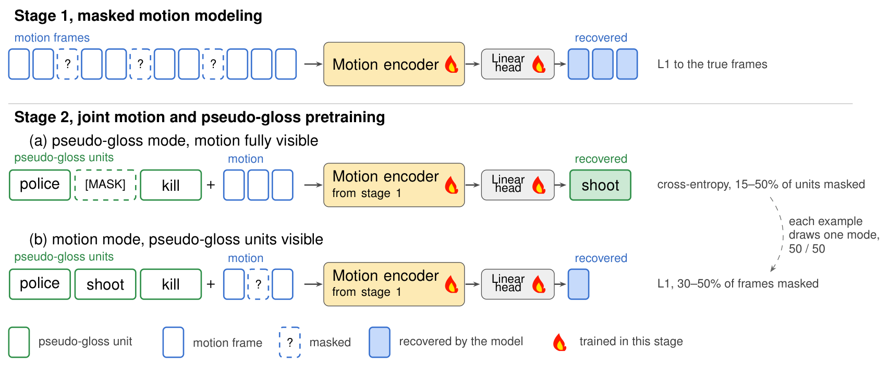
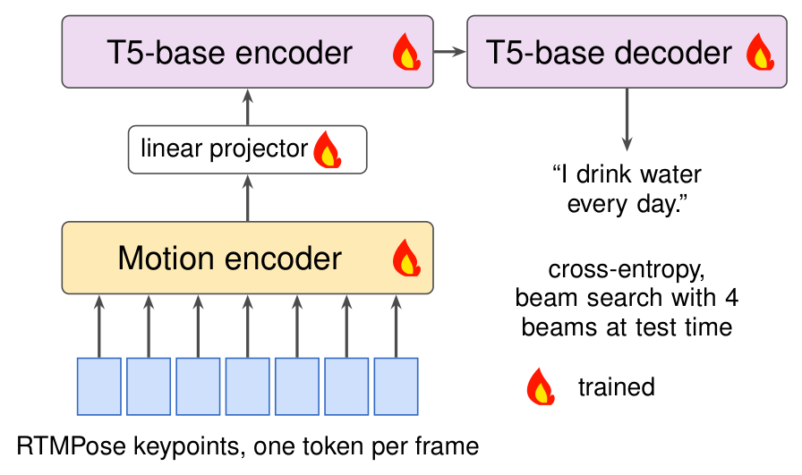
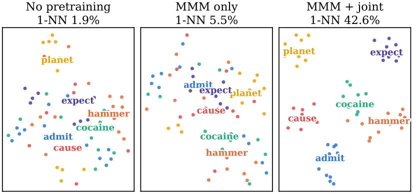

Translation (BLEU-4, setting A) and isolated sign recognition (top-1). Every method except the published SHuBERT and PoseFormer recognition results was trained and tested by us under the same protocol.
Abstract
Sign language translation and recognition have been shown to benefit from various pretraining approaches. We propose a novel two-stage pretraining approach for the motion encoder, which first learns to reconstruct masked motion, followed by joint masked prediction of pseudo-gloss units and motion. Pseudo-glosses serve as an intermediate structured representation of natural language text and are obtained from the captions by a large language model. We curate a corpus of about 1,100 hours of American Sign Language from five public datasets, estimate 2D pose for all clips and define an evaluation protocol. We then reproduce state-of-the-art translation methods and evaluate them using the same train and test splits. We propose a translation model built on our pretraining strategy, and this model outperforms the previous state-of-the-art methods Uni-Sign and SHuBERT, as well as the YouTube-ASL baseline, on the How2Sign, ASL STEM Wiki and OpenASL datasets. Furthermore, the gain from the joint pretraining using motion and pseudo-gloss grows as translation data shrinks. A classifier built on the same encoder also achieves state-of-the-art accuracy on ASL Citizen isolated sign recognition and outperforms our reproduction of Uni-Sign on WLASL2000.
Highlights
1,112 h
curated ASL corpus from five public datasets, 472K clips, one set of RTMPose keypoints for every clip
27.84
BLEU-4 on OpenASL, against 22.36 for our reproduction of Uni-Sign with RGB, while reading keypoints only
78.0%
top-1 on ASL Citizen (2,731 signs, official signer-disjoint split), 61.1% without pretraining
Method
A Transformer encoder reads RTMPose keypoints, one frame per token, and is pretrained in two stages before translation.

Two-stage pretraining. Stage 1 (masked motion modeling) masks 30% of the frames and recovers them. Stage 2 feeds the pseudo-gloss units and the motion of the same clip into the encoder from stage 1. Each example masks either units or frames, and the model recovers what was masked. To recover a masked unit it has to find that sign in the motion.
Pseudo-glosses
ASL corpora have English captions but no glosses. An open-weight LLM (Qwen3.5-27B) rewrites each caption into a short sequence of gloss-like units, guided by a sign lexicon of 3,339 entries built from ASL Signbank and ASL Citizen.
Caption
Pseudo-gloss
Police shot and killed the knifeman.
police shoot kill knifeman
Hi, my name is Katie Moore.
hi my name katie moore
The Japanese government has approved this process.
japanese government approve process
Translation
The pretrained encoder is followed by a linear projector and T5-base, and all parts are trained end to end.

Translation model.
A curated ASL corpus
One documented processing of five public datasets, with the same keypoints and cleaned captions for every clip. For setting B, no training clip comes from the same video as a test clip.
Source
Videos
Clips
Hours
YouTube-ASL
8,790
228,399
440.4
ASL STEM Wiki
229
59,109
291.7
OpenASL
1,476
70,763
169.0
YouTube-SL-25, ASL
4,069
83,181
152.1
How2Sign
2,192
30,794
58.8
Total
15,687 unique
472,246
1,112.1
Results
Setting A: YouTube-ASL pretraining and per-dataset fine-tuning (BLEU-4)
Every method is trained for translation on the same 785 hours of YouTube-ASL and then fine-tuned per dataset. OpenASL is also split by whether the source video is in YouTube-ASL. All baselines are our reproductions under the same protocol. SHuBERT (A), (C1) and (C2) are three reproductions that differ in preprocessing and weight decay.
Method
Input
How2Sign
STEM
OpenASL all
unseen
seen
YouTube-ASL baseline
pose
3.32
3.19
13.23
6.37
16.10
SHuBERT (A)
pose + RGB
0.04
0.13
1.30
0.97
1.44
SHuBERT (C1)
pose + RGB
0.01
0.05
0.21
0.12
0.25
SHuBERT (C2)
pose + RGB
0.35
0.39
0.46
0.25
0.52
Uni-Sign
pose
9.28
19.85
21.56
15.42
24.19
Uni-Sign
pose + RGB
9.55
20.51
22.36
16.48
24.71
Ours, no pretraining
pose
6.96
15.34
20.41
14.12
23.06
Ours, MMM only
pose
9.27
19.75
24.69
17.40
27.77
Ours, joint only
pose
8.43
17.95
24.28
15.19
27.99
Ours, MMM + joint
pose
9.79
22.00
27.84
18.92
31.66
Setting B: one model on all data, no fine-tuning (BLEU-4)
Data is the share of translation sentences. For 50% and 25% only the translation stage sees less data, and the pretrained encoders are the same. The gap between the two encoders grows as the data shrinks.
Data
Method
STEM
OpenASL
How2Sign
YT-ASL
100%
Uni-Sign
3.43
9.57
3.35
6.33
Ours, no pretraining
0.76
4.76
1.77
2.88
Ours, joint only
18.74
20.29
8.53
13.57
Ours, MMM only
21.20
21.11
9.98
15.19
Ours, MMM + joint
21.99
21.64
10.38
15.81
50%
Ours, MMM only
9.59
13.22
5.12
9.74
Ours, MMM + joint
16.80
19.21
8.37
13.06
25%
Ours, MMM only
0.58
3.95
1.49
2.07
Ours, MMM + joint
10.55
13.75
5.78
10.04
Isolated sign recognition
ASL Citizen, 2,731 signs, official signer-disjoint split (top-1 / top-5, %). Published results are taken from the cited papers. †The paper does not state which split it evaluates on.
Method
Input
Top-1
Top-5
ST-GCN
pose
60
83
SignCLIP
pose
60
84
PoseFormer†
pose
75.1
93.2
I3D
RGB
63
86
SHuBERT
pose + RGB
65
87
SignDEG
RGB
70.4
89
Ours, no pretraining
pose
61.1
83.6
Ours, MMM only
pose
74.3
91.6
Ours, MMM + joint
pose
78.0
94.0
WLASL, official split, per-instance top-1 (%). Both methods start from the same 1,112 hours and read the same RTMPose keypoints. Uni-Sign is our reproduction with its released WLASL recipe.
Method
WLASL100
WLASL2000
Uni-Sign
84.5
47.3
Ours, MMM + joint
83.7
52.2
What joint pretraining changes in the encoder

Encoders trained on YouTube-ASL only, applied to ASL Citizen test clips from unseen signers without any fine-tuning. For each clip we take the closest clip of another signer. It shows the same sign for 1.9% of the clips without pretraining, 5.5% after MMM and 42.6% after MMM and joint pretraining (random guessing 0.04%).
Code, data and weights
GitHub: the model, both pretraining stages, translation, recognition and evaluation scripts, the preprocessing for new data (RTMPose extraction, pseudo-gloss prompt and parser, sign lexicon), and our reproductions of Uni-Sign, the YouTube-ASL baseline and SHuBERT.
Hugging Face: RTMPose keypoints of every clip, MediaPipe landmarks used by the SHuBERT reproduction, captions and pseudo-glosses, every split used in the paper, and the weights of our models and of the Uni-Sign and YouTube-ASL baseline reproductions (CC BY-NC 4.0).
BibTeX
@article{hong2026mogloss,
title = {{MoGloss}: Joint Motion and Pseudo-Gloss Pretraining for American Sign Language Understanding},
author = {Hong, Rui and Ko{\v{s}}eck{\'a}, Jana},
journal = {arXiv preprint arXiv:XXXX.XXXXX},
year = {2026}
}